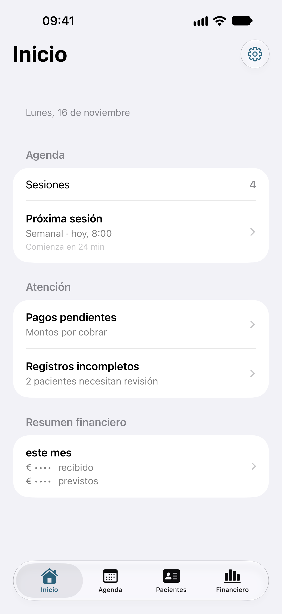
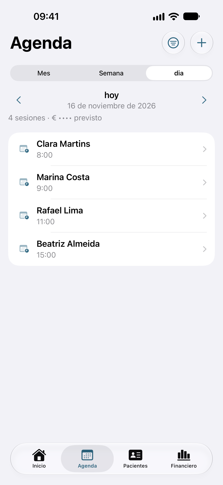
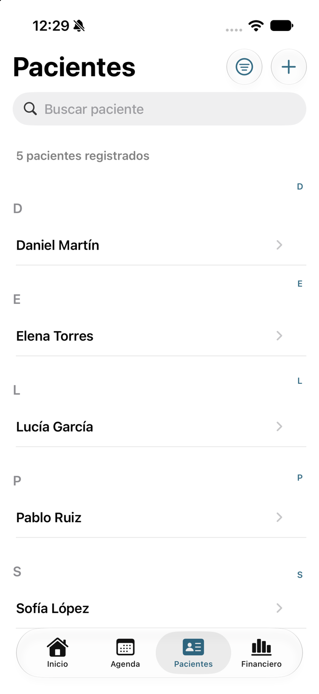
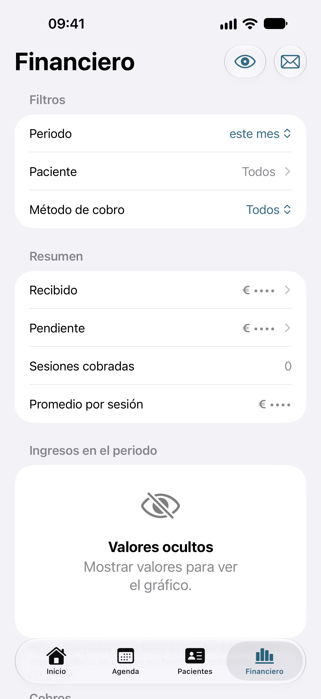
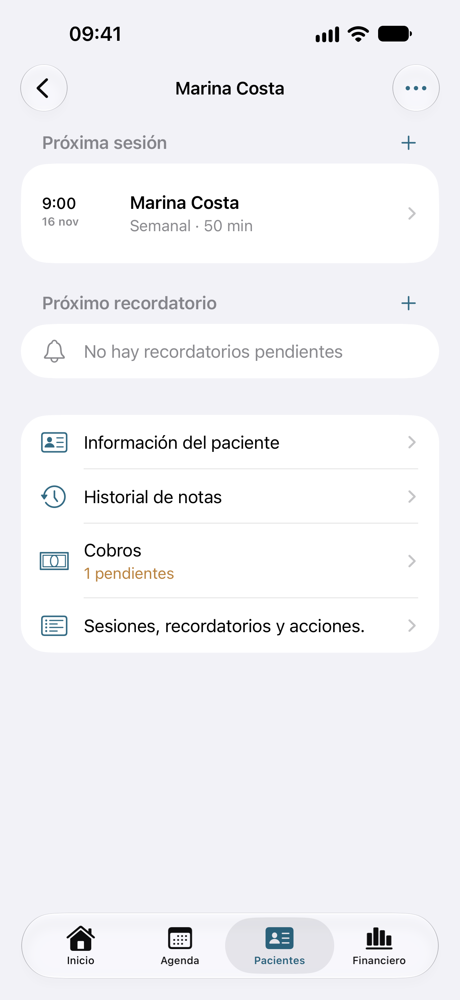
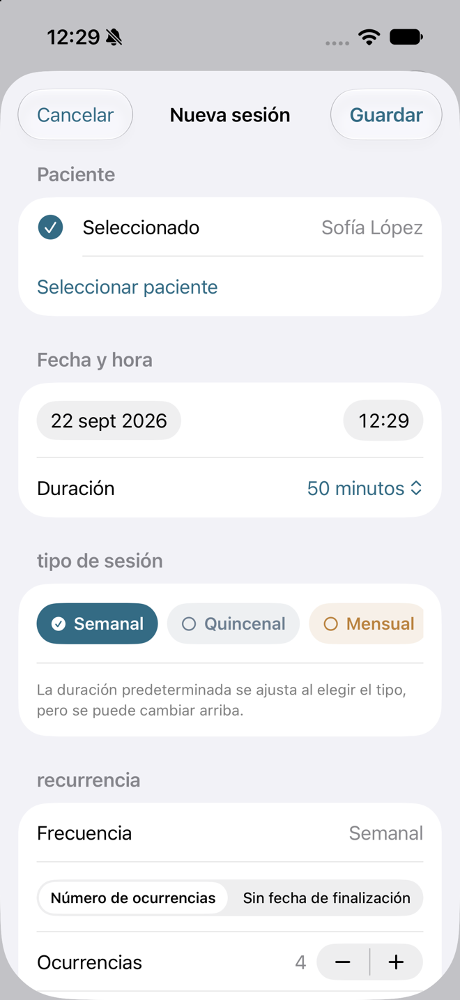
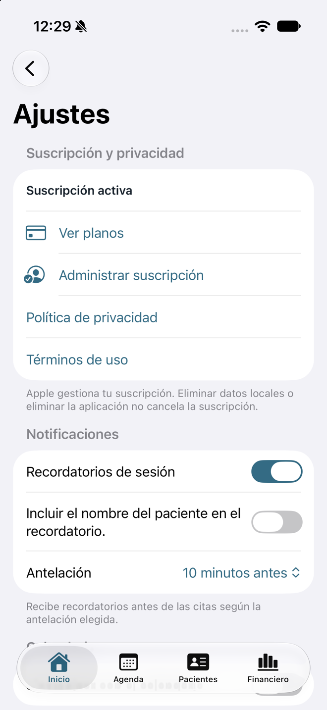

Sesiones organizadas por día.
Consulta las sesiones de hoy, los próximos compromisos, las sesiones recurrentes y los recordatorios con una visión clara de tu semana clínica.
App nativa para iOS
Agenda, pacientes y cobros conectados para que sigas cada etapa de la sesión en el iPhone.
Claridad para tu rutina. Privacidad a tu manera.

Mira la app en acción
De la agenda al contexto del paciente y los cobros: descubre un recorrido real por PsiControle.
Las funciones que se muestran requieren una suscripción. La grabación usa datos ficticios.
Tu rutina, en un solo lugar. Consulta tu agenda con claridad. Encuentra a cada paciente. Ten su contexto a la mano. Lleva el control de tus cobros. Las funciones que se muestran requieren una suscripción. La grabación usa datos ficticios.
Rutina clínica
Ten la agenda, el contexto de cada paciente, los pendientes y las finanzas siempre a la mano, sin depender de hojas de cálculo, notas sueltas ni herramientas desconectadas.
Consulta las sesiones de hoy, los próximos compromisos, las sesiones recurrentes y los recordatorios con una visión clara de tu semana clínica.
Ten los contactos, documentos, dirección, notas, historial y pendientes vinculados al registro de cada paciente.
Filtra los cobros, consulta los montos pendientes y el resumen del periodo, con la opción de ocultar la información financiera.
Consulta la agenda y los pacientes, crea o completa sesiones y registra cobros con Siri o la app Atajos.
Agenda
Planea el día, sigue rutinas semanales, quincenales o mensuales y mantén los recordatorios sincronizados con el Calendario de iOS.

Pacientes
Busca, filtra y revisa los registros con la información más importante para tu rutina.

Finanzas
Usa filtros por periodo, paciente y método de pago para seguir tu consultorio sin convertir la app en un sistema de contabilidad.

Privacidad y seguridad
De forma predeterminada, tus datos se quedan en el iPhone. A partir de la versión 1.0.8, puedes elegir guardarlos también en el iCloud de tu cuenta de Apple y usarlos en otros dispositivos. El equipo de PsiControle no puede consultar el contenido de este espacio privado. Calendario, notificaciones, Siri, Atajos, búsqueda en el dispositivo y exportación también son opcionales. Entiende dónde se guardan tus datos y cómo eliminarlos.
Pantallas
Conoce las áreas principales de la app: inicio, agenda, pacientes, detalles, nueva sesión, finanzas y configuración.



PsiControle
Empieza con una app sencilla, creada para psicólogos que buscan claridad, privacidad y menos fricción operativa.
Descárgalo en elApp Store